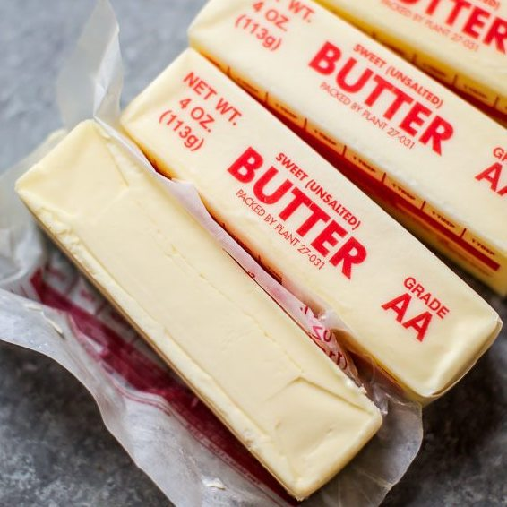

Hershey Secret Kiss Cookies
Ingredients
1 Cup of Unsalted Butter (2 Sticks)
2 Cups of Flour
1/2 Cup of Sugar
1 Tsp of Vanilla Extract
60 Peeled Hershey Kisses
Pinch of Salt
Powdered Sugar
Directions
Take out two sticks of unsalted butter to soften for a couple hours.
Peel 60 Hershey kisses and put them to the side.
Put the melted butter into a mixer, add in the 1/2 cup of sugar, and mix.
Slowly add in the 2 cups of flour, 1 Tsp of vanilla extract, and pinch of salt as you continue to mix the dough.
When the dough is ready, wrap each Hershey Kiss in it until you can't see any chocolate poking out of the dough anymore.
With 12 cookies per tray on a ungreased cookie sheet, put them into the oven at 350ºF for 8 to 10 minutes or until the dough sets.
Let the cookies cool on baking tray for 1-2 minutes before moving them to a cooling rack.
After the cookies cool, sprinkle powdered sugar on top.
Tip: Put wax paper or paper towels under the cooling rack to catch the powdered sugar.
